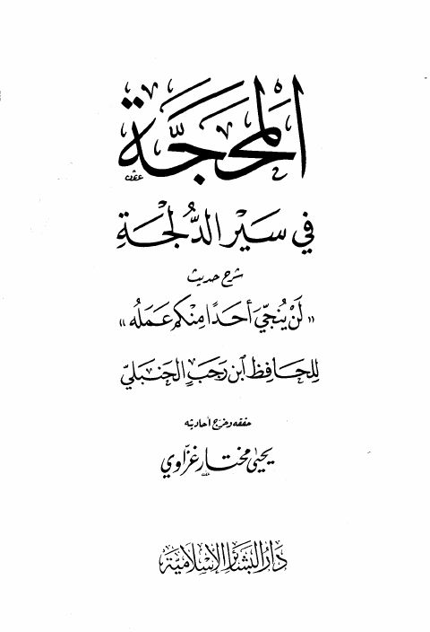

Downloads need an internet connection.
المحجة في سير الدلجة شرح حديث "لن ينجي أحدًا منكم عمله"
Authors: ابن رجب الحنبلي
Editors: يحيى مختار غزاوي
Publishers: دار البشائر الإسلامية
**▫️ العنوان: المحجة في سير الدلجة شرح حديث "لن ينجي أحدًا منكم عمله" ** ▪️ المؤلف: #عبد_الرحمن_البغدادي_بن_رجب_الحنبلي ▫️ المحقق: #يحيى_مختار_غزاوي ▪️ الناشر: #دار_البشائر_الإسلامية ▫️ تاريخ النشر: 1404هـ 1984م ▪️ بلد النشر: بيروت، #لبنان ▫️ الطبعة: 1 ▪️ عدد الأجزاء: 1 ▫️ الصفحات: 127 ▪️ نوع الوعاء: #كتاب ▫️ التصنيف الرئيسي: #الحديث_وعلومه ▪️ التصنيف الفرعي: #باقي_مجموعات_الحديث ۪